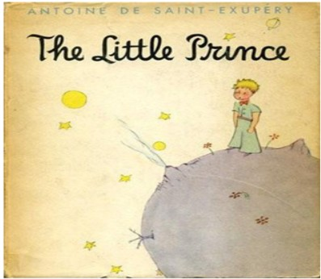

As the little prince dropped off to sleep, I ttok him in my aems and set out walking oncemore. I felt deeply moved and stirred. It seemed to me that I was carrying a very fragile treasure., It seemed to me, even, that there was nothing more fragile on all Earth, and "What I see here is nothing but a shell. What is most important is invisible...". As his lips opened slighty with the suspicion of a half-smile, I said to myself, again: "What moves me so deeply, about this little prince who is sleeping here, is his loyalty to a flower-- the image of a rose that shines through his whole being like the flame of a lamp, even when he is asleep ..." And I felt him to be more fragile still. I felt the need of protecting him, as if he himself were a flame that might be extinguished by a little puff of wind...
Back to Home page